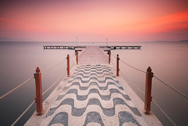

16 Что следует избегать в осознанных сновидениях
1) Если цель - не тренировка удержания внимания на множестве объектов, лучше не задействовать сложные сцены, поскольку это отнимает энергию внимания и как следствие, сокращает время ОС. Например, если осознаешься внутри сна на людной улице, лучше уйти в помещение, где объектов удержания внимания гораздо меньше (если, конечно, нет клаустрафобии, в противном случае, можно выбирать простые ланшафты)
2) Избегать очень темных помещений. Если зрительный сигнал пропадает, внимание удерживать становится в разы сложнее
3) В случае, если существа снов проявили агрессию, стоит вспомнить, что никто не обязывает поддерживать человеческое тело и защищаться привычными в реальной жизни методами - часто это только вредит. В сновидении люди могут быть кем угодно, поэтому при нападении со спины, если их удерживают за руки, могут попасть врасплох. Всегда можно стать многоглазым насекомым, лучем света, в конце-концов, но лучше чем-то не твердым, более жидким, чтобы никакой удар или агрессия не оставила вам повреждений, можно было стечь как вода, или же даже быть миражем, в любом случае, стать любой формой, наименее подверженной опасным воздействиям.
4) Если что-то нужно получить-найти: не спрашивать у существ снов, как пройти/где найти - гиблое дело. Наиболее действенный способ - материализация конкретной локации-предмета, причем делать материализацию лучше без прерывания логики сна. Например, если уже есть рама- лучше использовать ее. Как и в реальности, здесь тоже частенько лучше пользоваться "лифтами" для реализации намерения. Точно так же и новая локация - лучше не просто материализовать перед собой "дивный новый мир", а переключить внимание посредством вращения/двери и так далее.